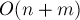

MAXimal
добавлено: 10 Jun 2008 19:25
редактировано: 24 Aug 2011 12:31
Содержание [скрыть]
Алгоритм поиска компонент связности в графе
Дан неориентированный граф  с
с  вершинами и
вершинами и  рёбрами. Требуется найти в нём все компоненты связности, т.е. разбить вершины графа на несколько групп так, что внутри одной группы можно дойти от одной вершины до любой другой, а между разными группами — пути не существует.
рёбрами. Требуется найти в нём все компоненты связности, т.е. разбить вершины графа на несколько групп так, что внутри одной группы можно дойти от одной вершины до любой другой, а между разными группами — пути не существует.
Алгоритм решения
Для решения можно воспользоваться как обходом в глубину, так и обходом в ширину.
Фактически, мы будем производить серию обходов: сначала запустим обход из первой вершины, и все вершины, которые он при этом обошёл — образуют первую компоненту связности. Затем найдём первую из оставшихся вершин, которые ещё не были посещены, и запустим обход из неё, найдя тем самым вторую компоненту связности. И так далее, пока все вершины не станут помеченными.
Итоговая асимптотика составит : в самом деле, такой алгоритм не будет запускаться от одной и той же вершины дважды, а, значит, каждое ребро будет просмотрено ровно два раза (с одного конца и с другого конца).
Реализация
Для реализации чуть более удобным является обход в глубину:
int n; vector<int> g[MAXN]; bool used[MAXN]; vector<int> comp; void dfs (int v) { used[v] = true; comp.push_back (v); for (size_t i=0; i<g[v].size(); ++i) { int to = g[v][i]; if (! used[to]) dfs (to); } } void find_comps() { for (int i=0; i<n; ++i) used[i] = false; for (int i=0; i<n; ++i) if (! used[i]) { comp.clear(); dfs (i); cout << "Component:"; for (size_t j=0; j<comp.size(); ++j) cout << ' ' << comp[j]; cout << endl; } }
Основная функция для вызова — , она находит и выводит компоненты связности графа.
Мы считаем, что граф задан списками смежности, т.е. ![g[i]](../tex2png/cache/c143026334a39328e865e722e32faa53.png) содержит список вершин, в которые есть рёбра из вершины
содержит список вершин, в которые есть рёбра из вершины  . Константе
. Константе  следует задать значение, равное максимально возможному количеству вершин в графе.
следует задать значение, равное максимально возможному количеству вершин в графе.
Вектор содержит список вершин в текущей компоненте связности.